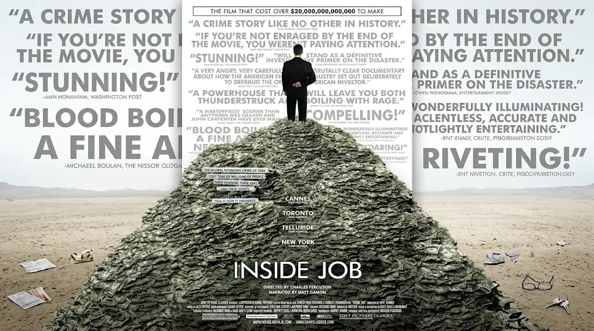

Charles Ferguson'un 2010 yapımı belgeseli, 2008 küresel finans krizine giden süreci ve finans kuruluşları, düzenleyiciler ile siyaset arasındaki ilişkileri inceliyor. Röportajlar ve arşiv kayıtlarıyla karmaşık ekonomik kararların toplumsal sonuçlarını anlaşılır kılıyor.